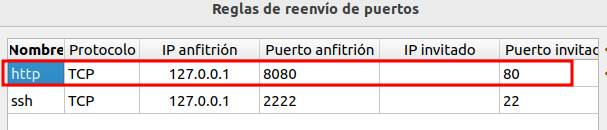
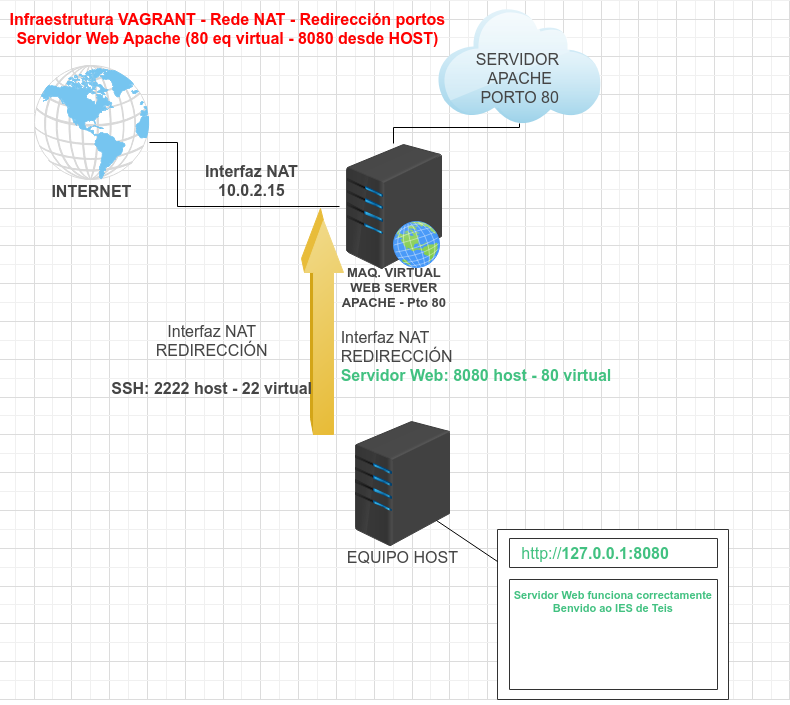

Cando se crea unha máquina con Vagrant, creáse por defecto unha interface de rede en modo NAT.
Ademais a esta interface de rede, se lle configura unha redirección de portos automáticamente, o porto ssh corre na máquina virtual no porto 22, e redireccionase á máquina host ao porto 2222.
Gracias a esto, podémonos conectar á máquina virtual desde a real coa cadena:
ssh vagrant@127.0.0.1 -p 2222
Outra forma de acceder ao servidor Apache sen configurar ningunha interface máis sería a través da redirección de portos na interface NAT.
config.vm.network "forwarded_port", guest: "80", host: "8080"
Deste xeito cando se inicia a máquina, se accedemos á parte de redirección de portos da interface NAT, que é a única que ten o equipo:

A infraestrutura de rede sería algo así:

Como se ve na imaxe, accederíamos ao servidor Web, desde o navegador, polo protocolo http á dirección localhost 127.0.0.1:8080.
DESCARGA FICHEROS